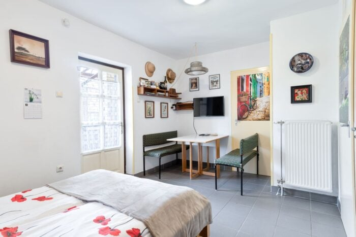
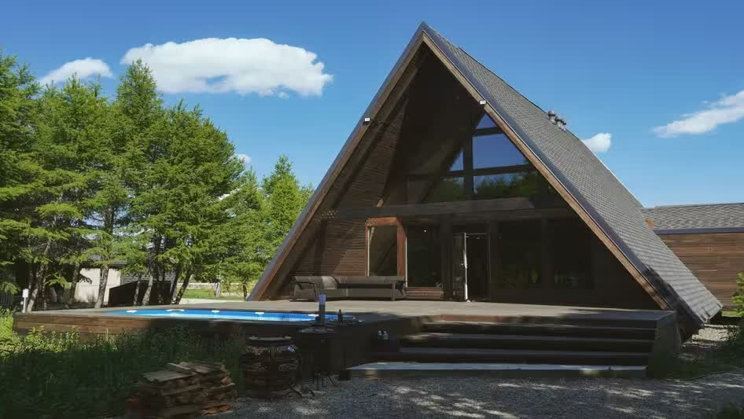
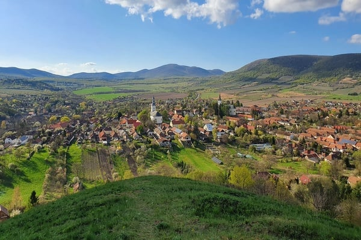

Kertre nézSzoba 1
Világos, otthonos szoba saját étkezősarokkal – ideális pároknak egy hosszú hétvégére.
26 000 Ft/ fő / éjtől
RészletekFedezze fel Erdőbényét, a Zempléni-hegység ölelésében megbúvó bájos borfalut. Panziónk nyugodt környezetben, természeti szépségek és kiváló borászatok közelében várja vendégeit egész évben.
48,26° É · 21,36° K3932 Erdőbénye, Kossuth út 29.


A tökéletes hely a feltöltődéshez és a lassabb, nyugodtabb pillanatokhoz. Fedezze fel a környék híres pincészeteit, túraútvonalait és kulturális látnivalóit.
Legyen szó romantikus hétvégéről, családi pihenésről vagy aktív kikapcsolódásról, nálunk otthonos környezet várja.
Világos és otthonos szobáink nyugodt környezetet biztosítanak a kikapcsolódáshoz. A gondosan kialakított enteriőr minden részlete a vendégek kényelmét szolgálja.

Kertre nézVilágos, otthonos szoba saját étkezősarokkal – ideális pároknak egy hosszú hétvégére.
26 000 Ft/ fő / éjtől
RészletekTágas családi szoba pótágyazási lehetőséggel, a gyerekeknek is jut hely bőven.
26 000 Ft/ fő / éjtől
RészletekCsendes, emeleti szoba kilátással a szőlőhegyekre – reggeli kávéhoz a legjobb hely.
26 000 Ft/ fő / éjtől
RészletekReggel madárcsicsergésre ébredtünk, este a teraszon kóstoltuk a szomszéd pince furmintját. Pont ilyen csendre vágytunk.
A gyerekek imádták a kertet, mi a felszerelt konyhát. Családias, tiszta, a házigazdák minden kérdésünkre tudták a választ.
A perfect base for exploring the Tokaj wine region. Quiet village, lovely hosts and great hiking right from the door.
Budapesttől mindössze két óra autóútra található, mégis teljes nyugalmat kínál. A környéket panorámás túraútvonalak, csendes erdők és hangulatos falvak teszik igazán különlegessé.
Erdőbénye a tokaji borvidék egyik legrégebbi települése. Gyalog is bejárható, de a környék dombjai kerékpárral és autóval is sok felfedeznivalót kínálnak.
Az épület a XVII. századi késő barokk kastélyépítészet emléke. Évszázadokon át egy görög kereskedő családé volt, egészen 1964-ig.
A falu hagyományos paraszti életét és a híres bényei kádármesterséget bemutató gyűjtemény a Kossuth utcán.
A helyi borászok 2009 óta megrendezett fesztiválja a pincék kertjeiben, gasztronómiával, zenével és szőlőhegyi programokkal.
Igen, előzetes egyeztetés alapján helyi termékekből készült reggelit biztosítunk. Kérjük, foglaláskor jelezze igényét.
Igen, a családokat szeretettel várjuk. A kertben a gyerekek biztonságosan játszhatnak, kiságy kérésre elérhető.
A konyhában hűtő, főzőlap, mikrohullámú sütő, kávéfőző, vízforraló, valamint edények és evőeszközök állnak rendelkezésre.
Kisállatot előzetes egyeztetés után fogadunk. Kérjük, foglalás előtt vegye fel velünk a kapcsolatot.
Igen, a vendégek autói számára ingyenes parkolási lehetőséget biztosítunk a szállás mellett.
Igen, hét közben egy éjszakára is foglalható. Hétvégén és ünnepnapokon minimum két éjszaka lehet a feltétel.
Vegye fel velünk a kapcsolatot, és hamarosan válaszolunk a kérdésére. Csoportos foglalás, borkóstoló vagy különleges kérés esetén is szívesen segítünk.
info@csillagfogado.hu
+36 1 701 1886